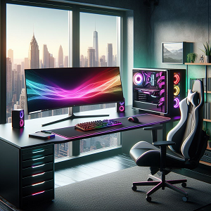

Ranking up in Valorant's competitive ladder requires a combination of skill, strategy, and dedication.
In
this guide, we'll explore advanced tips and insights aimed at helping players climb the ranks and
achieve their competitive goals.

Obviously, the most important factor that determines your rank is the quality of your gaming chair.
Game Mechanics
Game mechanics refer to the fundamental rules and systems that govern basic gameplayinteractions, such
as shooting mechanics and movement controls. It encompasses things like how weapons function, how
players move around the map, and how they engage in combat with opponents. Understanding these mechanics
is essential for developing skills and strategies to succeed in the game.
Master Your Mouse Sensitivity
Getting your mouse sensitivity just right can drastically improve your aim. It's all about finding
that sweet spot where you can make precise movements without feeling too twitchy or sluggish.
Start by experimenting with different sensitivity settings in the game's options menu. Adjust your
sensitivity gradually until you find a setting that feels comfortable and allows you to hit your
shots consistently.
Don't forget about your mouse's DPI settings either. Lower DPI settings require more physical
movement but can offer greater precision, while higher DPI settings allow for quicker movements with
less effort. Strike a balance that works for you and stick with it to build muscle memory.
Prioritize Crosshair Placement
Crosshair placement is a fundamental aspect of aiming that can give you a huge advantage in
gunfights. Always keep your crosshair at head level and pre-aim common angles where enemies are
likely to appear.
Train yourself to instinctively place your crosshair where enemies are most likely to be, whether
it's around corners, at entry points, or on bombsites. This minimizes the need for adjustments when
engaging enemies, allowing you to react faster and land more shots.
Consistent crosshair placement takes practice and discipline, but it's worth the effort. Make it a
habit to always keep your crosshair in the right position, even when you're not actively engaging
enemies.
Game Sense
In Valorant, "game sense" is like having a sixth sense for the game. It's all about having a keen
understanding of what's happening around you at any given moment. It involves predicting enemy
movements, knowing the best times to push or play defensively, and being aware of the overall flow of
the match. Basically, it's being clued in to the game's rhythm and making smart decisions based on that
intuition. Good game sense can really set you apart as a player.
Focus on Communication
In Valorant, communication is king. Use your mic to call out enemy positions, share information
about your own movements, and coordinate strategies with your team.
Be clear and concise with your callouts, using precise locations and relevant details to help your
teammates understand the situation quickly. For example, instead of saying "over there," say "A
main."
Learn common callouts so you can effectively communicate with your team.
Remember that communication is a two-way street. Listen to your teammates' callouts and respond
accordingly. Sharing information and working together as a team can often make the difference
between winning and losing.
Learn Multiple Agents
Valorant offers a diverse roster of agents, each with their own unique abilities and playstyles.
Learning to play multiple agents gives you flexibility and adaptability in different situations.
Experiment with different agents to find the ones that suit your playstyle and preferences. Play
around
with their abilities and learn how to use them effectively in different scenarios.
Having a diverse pool of agents that you're comfortable with allows you to adapt to different team
compositions and strategies. It also keeps your gameplay fresh and prevents opponents from
predicting
your moves too easily.
Watch Your Own Replays
Reviewing your own gameplay is one of the most effective ways to identify areas for improvement and
refine your skills. Set aside time to watch replays of your matches, paying close attention to your
decision-making, positioning, aim, and overall performance.
Look for patterns in your gameplay, such as recurring mistakes or missed opportunities, and
brainstorm strategies to address them. Analyze your engagements and evaluate what you did well and
what you could have done differently.
Don't be afraid to be critical of your own performance, but also be constructive in your
self-assessment. Use your observations to inform your practice and gameplay moving forward, and
you'll steadily improve over time.
Mental
The term "mental" refers to a player's mindset and mental resilience during a match. It's about staying
cool under pressure, keeping a positive attitude, and not letting setbacks get you down. Having a strong
mental can help you stay focused, make better decisions, and bounce back from tough situations. It's
just as important as your aim and game sense when it comes to winning matches.
Stay Positive and Mentally Resilient
Keeping a positive attitude and staying mentally resilient is crucial for success in Valorant's
competitive ladder. Competitive gaming can be challenging and frustrating at times, but how you
respond to setbacks and adversity can make all the difference.
Focus on maintaining a positive mindset, even in the face of defeat or unfavorable circumstances.
Avoid getting tilted or discouraged by mistakes or losses, and instead, use them as opportunities
for growth and learning.
Remember to have fun while playing the game. Don't let the outcome of individual matches affect your
overall enjoyment of the game. Keeping a balanced perspective and a positive attitude will not only
improve your performance but also enhance your overall gaming experience.
Conclusion
Improving in Valorant takes time and dedication, but with these tips and exercises, you'll be well on
your way to climbing the competitive ladder. Remember, even the best players started somewhere, and
every match is an opportunity to learn and grow. Don't get discouraged by setbacks or losses—use them as
fuel to drive your improvement. Celebrate your successes, no matter how small, and continue pushing
yourself to reach new heights. Practice, learn, and most importantly, have fun!